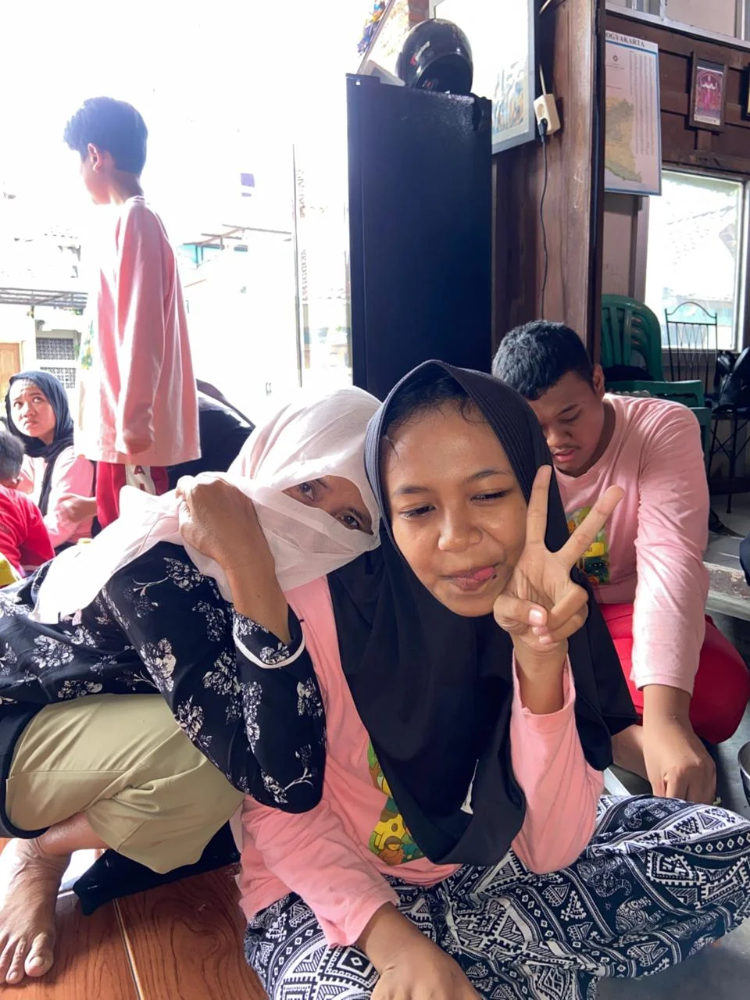
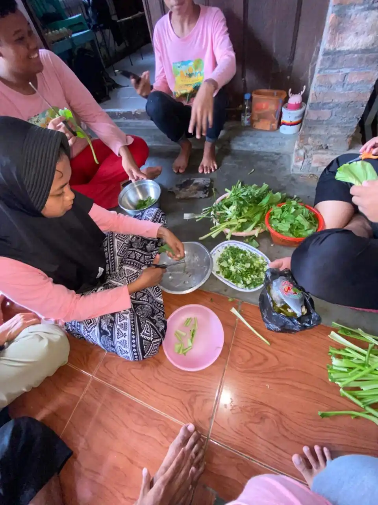
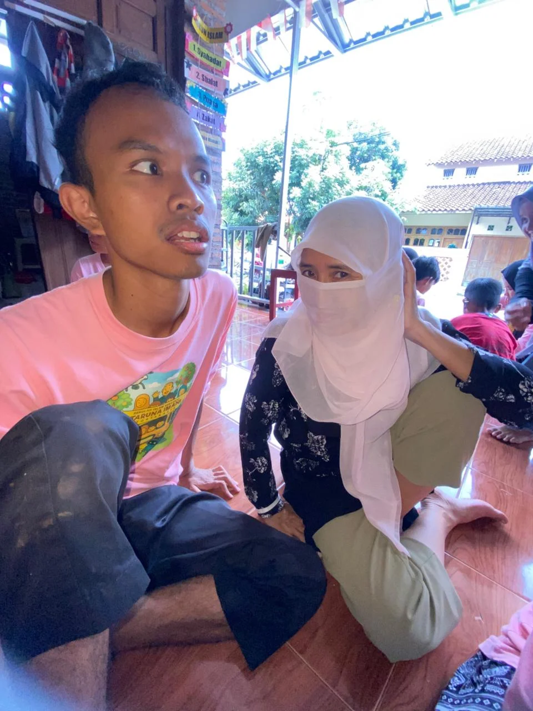
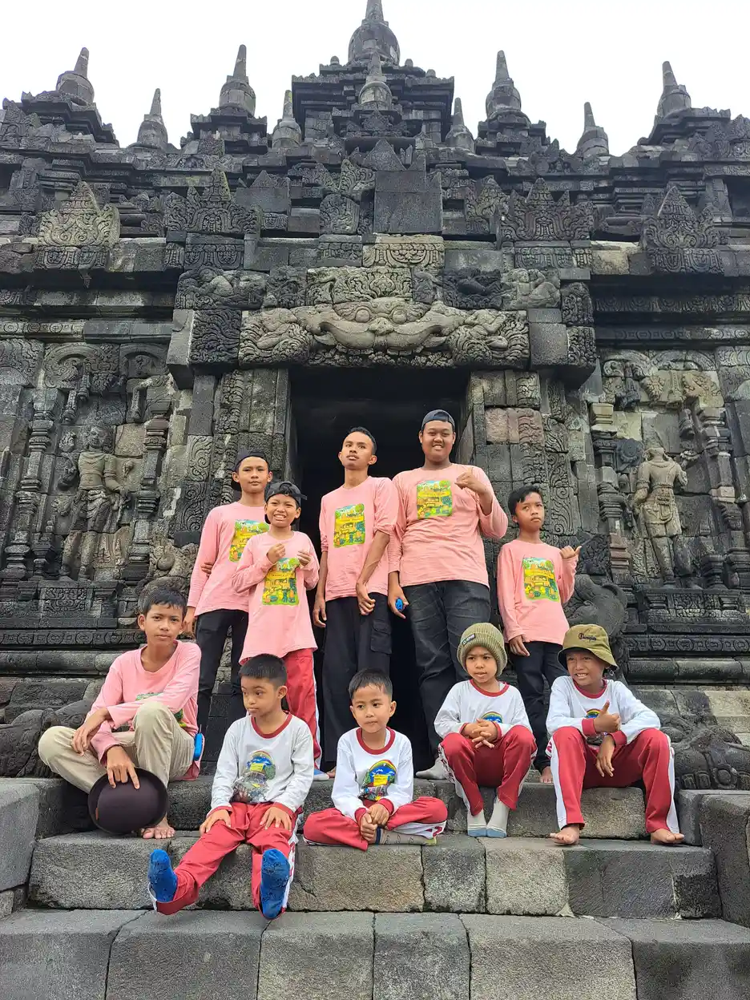

ABK adalah singkatan dari Anak Berkebutuhan Khusus, yaitu anak-anak yang memiliki perbedaan dalam aspek fisik, intelektual, sosial, atau emosional sehingga memerlukan layanan pendidikan yang disesuaikan dengan kebutuhannya. Di Indonesia, diperkirakan terdapat lebih dari 1,6 juta anak berkebutuhan khusus usia sekolah, namun baru sekitar 18% yang mendapatkan akses pendidikan layak menurut data publik yang tersedia.
Di Yayasan Ukhuwah Kaffah Amanatullah (YUKA), kami mendampingi anak-anak berkebutuhan khusus setiap hari melalui Sekolah Inklusi Taruna Imani di Sleman, Yogyakarta. Dari pengalaman langsung menangani berbagai jenis ABK selama bertahun-tahun, kami memahami betul bahwa setiap anak istimewa ini memiliki potensi luar biasa yang menunggu untuk digali. Artikel ini kami tulis berdasarkan pengalaman nyata di lapangan, bukan sekadar teori dari buku teks.
Dalam Islam, setiap anak adalah amanah dari Allah SWT yang harus dijaga dan dididik dengan sebaik-baiknya. Rasulullah SAW bersabda: "Setiap anak dilahirkan dalam keadaan fitrah." (HR. Bukhari-Muslim). Fitrah ini ada pada setiap anak tanpa terkecuali, termasuk anak berkebutuhan khusus. Justru, merawat dan mendidik mereka adalah amal yang sangat mulia di sisi Allah.
Daftar Isi
Pengertian ABK Menurut UU dan Para Ahli
Anak Berkebutuhan Khusus (ABK) adalah anak yang dalam proses tumbuh kembangnya mengalami kelainan atau penyimpangan, baik secara fisik, mental-intelektual, sosial, maupun emosional, sehingga memerlukan layanan pendidikan khusus. Definisi ini tercantum dalam Undang-Undang No. 8 Tahun 2016 tentang Penyandang Disabilitas dan diperkuat oleh Permendiknas No. 70 Tahun 2009 tentang Pendidikan Inklusif.
Istilah "berkebutuhan khusus" sendiri menggantikan istilah-istilah lama seperti "cacat" atau "luar biasa" yang dianggap mengandung stigma negatif. Pergeseran istilah ini mencerminkan perubahan paradigma: dari yang semula memandang ABK sebagai masalah, menjadi memandang mereka sebagai individu yang memiliki kebutuhan berbeda namun tetap berhak mendapatkan pendidikan dan kehidupan yang layak.
Menurut Kirk dan Gallagher (ahli pendidikan khusus), pengertian ABK mencakup anak-anak yang berbeda dari anak rata-rata dalam hal:
- Karakteristik mental - tingkat kecerdasan di atas atau di bawah rata-rata
- Kemampuan sensorik - gangguan penglihatan atau pendengaran
- Karakteristik neurologis atau fisik - gangguan motorik atau kesehatan
- Perilaku sosial - kesulitan dalam interaksi sosial dan emosional
- Kemampuan komunikasi - hambatan dalam berbicara atau memahami bahasa
- Kombinasi dari beberapa hal di atas - kondisi ganda atau multi
Tahukah Anda?
Istilah ABK tidak hanya mencakup anak dengan keterbatasan, tetapi juga anak yang memiliki kecerdasan atau bakat istimewa (gifted and talented). Mereka juga membutuhkan pendampingan khusus agar potensinya dapat berkembang optimal.
Jenis-Jenis Anak Berkebutuhan Khusus
Berdasarkan Permendiknas No. 70 Tahun 2009 dan pengalaman kami mendampingi ABK di Sekolah Inklusi Taruna Imani, berikut adalah jenis-jenis anak berkebutuhan khusus yang perlu dipahami:
1. Tunanetra (Gangguan Penglihatan)
Tunanetra adalah kondisi di mana anak mengalami gangguan penglihatan, baik sebagian (low vision) maupun total (buta). Anak tunanetra membutuhkan media pembelajaran khusus seperti huruf Braille, alat peraga taktil, dan pendampingan dalam mobilitas.
2. Tunarungu dan Tunawicara (Gangguan Pendengaran dan Bicara)
Tunarungu adalah anak yang mengalami gangguan pendengaran, sedangkan tunawicara mengalami gangguan dalam berbicara. Keduanya sering berkaitan karena anak yang tidak bisa mendengar sejak lahir akan kesulitan mengembangkan kemampuan bicara. Mereka biasanya berkomunikasi menggunakan bahasa isyarat (BISINDO) atau dengan bantuan alat bantu dengar.
3. Tunagrahita (Disabilitas Intelektual)
Tunagrahita adalah kondisi di mana anak memiliki tingkat kecerdasan di bawah rata-rata (IQ di bawah 70) disertai keterbatasan dalam perilaku adaptif. Tunagrahita dibagi menjadi tiga tingkatan: ringan (IQ 50-70), sedang (IQ 35-50), dan berat (IQ di bawah 35). Anak tunagrahita tetap bisa belajar dan berkembang, terutama dalam hal keterampilan hidup sehari-hari (life skills).
4. Tunadaksa (Disabilitas Fisik)
Tunadaksa merujuk pada anak yang mengalami kelainan pada sistem otot, tulang, atau sendi yang mengakibatkan gangguan fungsi tubuh. Penyebabnya bisa bawaan lahir (seperti cerebral palsy), kecelakaan, atau penyakit. Anak tunadaksa membutuhkan aksesibilitas fisik yang memadai dan alat bantu seperti kursi roda atau kruk.
5. Tunalaras (Gangguan Emosi dan Perilaku)
Anak tunalaras menunjukkan perilaku yang menyimpang dari norma sosial secara berulang dan konsisten. Mereka mungkin sulit mengendalikan emosi, sering bertindak agresif, menarik diri dari lingkungan sosial, atau menunjukkan kecemasan berlebihan. Dengan pendampingan yang tepat dan konsisten, perilaku ini dapat dikelola dan diperbaiki.
6. Autisme (Gangguan Spektrum Autisme/GSA)
Autisme adalah gangguan perkembangan neurologis yang memengaruhi kemampuan komunikasi, interaksi sosial, dan perilaku. Spektrum autisme sangat luas, mulai dari yang membutuhkan dukungan minimal hingga yang memerlukan pendampingan intensif. Di YUKA, kami mendampingi beberapa anak dengan autisme, termasuk Mas Ilham yang berhasil menghafal Al-Quran 30 juz dan kini mandiri melalui produksi telur asin.
7. ADHD (Attention Deficit Hyperactivity Disorder)
ADHD adalah gangguan pemusatan perhatian yang ditandai dengan kesulitan berkonsentrasi, hiperaktivitas, dan impulsivitas. Anak dengan ADHD bukan berarti bodoh atau nakal - mereka memiliki cara kerja otak yang berbeda dan seringkali justru sangat kreatif dan energik. Dengan strategi pembelajaran yang tepat, anak ADHD dapat berprestasi cemerlang.
8. Disleksia dan Kesulitan Belajar Spesifik
Disleksia adalah gangguan belajar yang memengaruhi kemampuan membaca, menulis, dan mengeja. Anak disleksia biasanya memiliki kecerdasan normal atau bahkan di atas rata-rata, tetapi mengalami kesulitan memproses informasi tertulis. Selain disleksia, terdapat juga diskalkulia (kesulitan berhitung) dan disgrafia (kesulitan menulis).
9. Anak Berbakat (Gifted and Talented)
Anak berbakat memiliki kemampuan intelektual, kreativitas, atau bakat khusus yang jauh di atas rata-rata usianya. Mereka termasuk ABK karena membutuhkan tantangan akademik yang lebih tinggi dan pendekatan pembelajaran yang berbeda agar tidak merasa bosan dan potensinya tidak terbuang.

Ciri-Ciri Anak Berkebutuhan Khusus
Mengenali ciri-ciri ABK sejak dini sangat penting agar anak bisa mendapatkan intervensi dan pendampingan yang tepat. Berdasarkan pengalaman kami di YUKA, berikut tanda-tanda yang perlu diperhatikan orang tua:
Ciri-Ciri pada Usia Dini (0-3 Tahun)
- Keterlambatan dalam mencapai milestone perkembangan (duduk, merangkak, berjalan, berbicara)
- Tidak merespons saat dipanggil namanya
- Kontak mata yang sangat minim atau tidak ada sama sekali
- Tidak menunjuk benda atau mengikuti arah tunjukan orang lain
- Gerakan motorik yang kaku atau terlalu lemah
- Respons berlebihan atau sangat kurang terhadap suara, cahaya, atau sentuhan
Ciri-Ciri pada Usia Sekolah (4-12 Tahun)
- Kesulitan mengikuti instruksi sederhana di kelas
- Sulit berkonsentrasi atau sangat mudah terdistraksi
- Kesulitan dalam membaca, menulis, atau berhitung yang tidak sesuai usia
- Perilaku yang sangat berbeda dari teman sebaya (terlalu agresif, sangat pendiam, atau menarik diri)
- Kesulitan berteman atau memahami aturan sosial
- Gerakan berulang (stimming) seperti mengepak tangan atau berputar-putar
- Keterlambatan bicara atau pola bicara yang tidak biasa
"Jika Anda merasa ada sesuatu yang berbeda pada perkembangan anak Anda, jangan ragu untuk berkonsultasi dengan profesional. Deteksi dini dan intervensi awal adalah kunci emas bagi masa depan anak berkebutuhan khusus." - Tim Pendidik YUKA
Hak Pendidikan ABK di Indonesia
Setiap anak berkebutuhan khusus di Indonesia dijamin haknya untuk mendapatkan pendidikan. Beberapa landasan hukum yang melindungi hak pendidikan ABK antara lain:
- UUD 1945 Pasal 31 Ayat 1: Setiap warga negara berhak mendapat pendidikan
- UU No. 20 Tahun 2003 tentang Sisdiknas: Pendidikan khusus dan pendidikan layanan khusus untuk peserta didik yang memiliki kelainan
- Permendiknas No. 70 Tahun 2009: Pedoman pelaksanaan pendidikan inklusif bagi peserta didik yang memiliki kelainan
- UU No. 8 Tahun 2016 tentang Penyandang Disabilitas: Hak atas pendidikan yang bermutu pada satuan pendidikan di semua jenis, jalur, dan jenjang
Orang tua ABK perlu mengetahui bahwa sekolah reguler tidak boleh menolak anak berkebutuhan khusus yang ingin mendaftar. Hal ini diatur dalam Permendiknas No. 70 Tahun 2009 yang mewajibkan sekolah inklusif untuk menerima ABK. Jika mengalami penolakan, orang tua dapat melapor ke Dinas Pendidikan setempat.
Selain sekolah inklusi, ABK juga bisa mendapatkan pendidikan di Sekolah Luar Biasa (SLB). Di Yogyakarta sendiri terdapat beberapa SLB dan sekolah inklusi, termasuk Sekolah Inklusi Taruna Imani yang dikelola oleh YUKA. Untuk panduan memilih lembaga pendidikan yang tepat, baca artikel kami tentang cara memilih yayasan terbaik untuk ABK.
Cara Mendukung Anak Berkebutuhan Khusus
Mendukung tumbuh kembang ABK membutuhkan pendekatan yang holistik dan berkelanjutan. Berikut langkah-langkah yang bisa dilakukan berdasarkan pengalaman kami di YUKA:
1. Asesmen dan Diagnosis yang Tepat
Langkah pertama adalah melakukan asesmen ABK oleh tenaga profesional (psikolog atau dokter spesialis anak). Asesmen ini penting untuk menentukan jenis dan tingkat kebutuhan khusus anak sehingga program pendampingan yang diberikan tepat sasaran. Tanpa asesmen yang akurat, intervensi yang diberikan bisa salah arah.
2. Memilih Lingkungan Pendidikan yang Tepat
Setiap ABK memiliki kebutuhan yang berbeda. Beberapa anak cocok dengan lingkungan sekolah inklusi yang memungkinkan mereka berinteraksi dengan anak-anak reguler, sementara anak lain mungkin membutuhkan lingkungan yang lebih terstruktur di SLB. Konsultasikan dengan profesional dan pertimbangkan kemampuan serta kenyamanan anak dalam memilih.

3. Bekerja Sama dengan Guru Pendamping Khusus (GPK)
GPK adalah guru yang memiliki keahlian khusus dalam mendampingi ABK di lingkungan sekolah. Juga dikenal sebagai shadow teacher, GPK berperan mendampingi anak selama proses belajar, membantu anak mengikuti kurikulum yang sudah dimodifikasi, dan menjadi jembatan komunikasi antara anak, guru kelas, dan orang tua. Peran orang tua dalam berkolaborasi dengan GPK sangat menentukan keberhasilan pendidikan anak.
4. Program Terapi yang Sesuai
Bergantung pada jenis kebutuhan khususnya, anak mungkin memerlukan satu atau beberapa jenis terapi:
- Terapi wicara - untuk anak dengan gangguan komunikasi dan bicara
- Terapi okupasi - untuk melatih keterampilan motorik halus dan kemandirian sehari-hari
- Terapi ABA (Applied Behavior Analysis) - untuk anak autisme, membantu mengembangkan keterampilan sosial dan mengurangi perilaku yang tidak diinginkan
- Terapi sensorik integrasi - untuk anak dengan gangguan sensorik
- Terapi memasak - metode terapi yang menyenangkan untuk melatih berbagai keterampilan secara bersamaan. Baca pengalaman kami di terapi memasak untuk ABK
5. Pengembangan Life Skills dan Kemandirian
Pendidikan ABK tidak boleh hanya fokus pada akademik. Yang lebih penting adalah mempersiapkan mereka untuk hidup mandiri di masyarakat. Di YUKA, kami menjalankan program pemberdayaan ABK yang meliputi keterampilan memasak, vokasi, dan kewirausahaan. Hasilnya nyata: Mas Ilham, salah satu siswa kami dengan autisme, kini mandiri secara ekonomi melalui produksi telur asin.
6. Dukungan Emosional dari Keluarga
Anak berkebutuhan khusus sangat membutuhkan kasih sayang dan penerimaan tanpa syarat dari keluarga. Orang tua perlu belajar memahami kondisi anak, mengelola ekspektasi, dan bergabung dengan komunitas orang tua ABK untuk saling menguatkan. Baca panduan lengkap kami tentang tips mendampingi anak autis dengan kasih sayang.
Pengalaman YUKA Mendampingi ABK: Setiap Anak Istimewa
Sejak berdiri, Yayasan Ukhuwah Kaffah Amanatullah (YUKA) telah mendampingi puluhan anak berkebutuhan khusus melalui Sekolah Inklusi Taruna Imani di Sleman, Yogyakarta. Kami bukan sekadar lembaga pendidikan - kami adalah keluarga bagi setiap anak yang kami dampingi.
Kisah Mas Ilham: Bukti Bahwa ABK Bisa Mandiri dan Berprestasi
Mas Ilham adalah Individu Berkebutuhan Khusus (IBK) dengan autisme yang telah bersama YUKA sejak kecil. Meski memiliki tantangan dalam komunikasi dan interaksi sosial, Ilham berhasil menghafal Al-Quran 30 juz - sebuah pencapaian yang luar biasa bahkan untuk anak tanpa kebutuhan khusus. Kini di usia 25 tahun, Ilham mandiri secara ekonomi melalui produksi telur asin yang ia kelola sendiri. Baca kisah lengkap Ilham di sini.
Kisah Ilham hanyalah satu dari banyak cerita keberhasilan di YUKA. Setiap hari, kami menyaksikan momen-momen kecil yang luar biasa: seorang anak yang baru bisa menggenggam pensil dengan benar setelah berbulan-bulan berlatih, anak autis yang pertama kali menyapa temannya tanpa dipandu, atau seorang anak down syndrome yang berhasil membuat kue sendiri dalam program cooking class.

Program-program YUKA dirancang untuk mengembangkan potensi ABK secara menyeluruh:
- Pendidikan akademik dan diniyah - kurikulum yang dimodifikasi sesuai kemampuan masing-masing anak, dilengkapi pendidikan agama Islam
- Life skills dan vokasi - pelatihan memasak, kerajinan, dan keterampilan hidup sehari-hari
- Wisata edukasi - kunjungan ke Candi Plaosan, Museum Gunung Merapi, dan berbagai destinasi edukatif di Yogyakarta
- Pemberdayaan ekonomi - melatih ABK dewasa untuk mandiri secara finansial melalui usaha produktif
YUKA terdaftar secara resmi di Kementerian Hukum dan HAM Republik Indonesia dan beroperasi dengan penuh transparansi. Seluruh donasi yang diterima disalurkan langsung untuk kebutuhan pendidikan dan kesejahteraan anak-anak berkebutuhan khusus. Untuk informasi lengkap tentang penyaluran donasi, baca laporan transparansi kami.

Pertanyaan yang Sering Diajukan (FAQ)
Apa itu ABK (Anak Berkebutuhan Khusus)?
ABK adalah singkatan dari Anak Berkebutuhan Khusus, yaitu anak yang memiliki kelainan atau perbedaan dalam aspek fisik, intelektual, sosial, atau emosional dibandingkan anak pada umumnya, sehingga memerlukan layanan pendidikan khusus yang disesuaikan dengan kebutuhannya.
Apa saja jenis-jenis ABK?
Jenis-jenis ABK meliputi: tunanetra (gangguan penglihatan), tunarungu (gangguan pendengaran), tunagrahita (disabilitas intelektual), tunadaksa (disabilitas fisik), tunalaras (gangguan emosi dan perilaku), autisme, ADHD, disleksia, dan anak berbakat (gifted).
Bagaimana cara mendukung anak berkebutuhan khusus?
Cara mendukung ABK meliputi: melakukan asesmen untuk mengenali kebutuhan spesifik, memilih lingkungan pendidikan yang tepat (sekolah inklusi atau SLB), bekerja sama dengan guru pendamping khusus (GPK), mengikuti program terapi yang sesuai, serta memberikan dukungan emosional dan kasih sayang tanpa batas.
Apa perbedaan sekolah inklusi dan SLB?
Sekolah inklusi adalah sekolah reguler yang menerima ABK untuk belajar bersama anak-anak pada umumnya dengan dukungan guru pendamping khusus. SLB (Sekolah Luar Biasa) adalah sekolah yang dikhususkan untuk ABK dengan kurikulum dan metode yang disesuaikan sepenuhnya.
Di mana saya bisa mendapatkan bantuan untuk anak berkebutuhan khusus di Yogyakarta?
Di Yogyakarta, Anda bisa menghubungi YUKA (Yayasan Ukhuwah Kaffah Amanatullah) yang mengelola Sekolah Inklusi Taruna Imani di Sleman. YUKA menyediakan pendidikan, pendampingan, dan program pemberdayaan untuk ABK. Hubungi kami di +62 812-2991-2332 atau kunjungi halaman kontak.
Kesimpulan
ABK adalah anak-anak istimewa yang memiliki potensi luar biasa jika diberikan kesempatan, dukungan, dan lingkungan yang tepat. Memahami pengertian, jenis-jenis, dan cara mendukung anak berkebutuhan khusus adalah langkah pertama untuk membangun masyarakat yang inklusif dan berkeadilan.
Setiap anak berkebutuhan khusus berhak mendapatkan pendidikan, kasih sayang, dan kesempatan untuk mengembangkan potensinya. Jika Anda memiliki anak berkebutuhan khusus atau ingin berkontribusi membantu pendidikan ABK, jangan ragu untuk menghubungi YUKA. Bersama-sama, kita bisa menjadi bagian dari perubahan yang berarti bagi masa depan anak-anak istimewa ini.
Baca juga untuk pendampingan ABK
Untuk memahami jalur pendidikan yang tepat, lanjutkan ke panduan pendidikan inklusi, peran guru pendamping khusus (GPK), dan pilihan SLB terdekat.
Baca Juga Artikel Terkait:
Sumber Resmi & Referensi Authoritative
Konten artikel ini diperkuat dengan referensi dari lembaga resmi pemerintah dan organisasi kesehatan internasional:
- UU No. 8 Tahun 2016 tentang Penyandang Disabilitas peraturan.bpk.go.id
- Kemenkes Ayo Sehat: Kumpulan Link Penting untuk Anak Disabilitas ayosehat.kemkes.go.id
- Kemenkes Yankes: Hak Anak Berkebutuhan Khusus keslan.kemkes.go.id
- Kemdikbudristek: Panduan Pelaksanaan Pendidikan Inklusif (2022) repositori.kemendikdasmen.go.id
Disclaimer Medis & Pendidikan: Artikel ini bersifat edukasi umum dan bukan pengganti konsultasi profesional. Untuk diagnosis, asesmen, atau penanganan anak berkebutuhan khusus, silakan konsultasikan langsung dengan dokter anak, psikiater anak, psikolog perkembangan, terapis okupasi, atau tenaga ahli pendidikan khusus yang berlisensi. YUKA Indonesia mendukung pendekatan multidisiplin dan tidak menggantikan peran tenaga medis maupun terapis profesional.